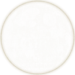
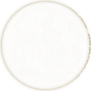
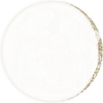
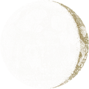
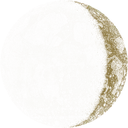
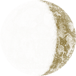
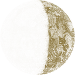
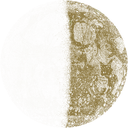
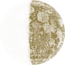
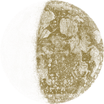
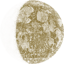
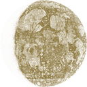
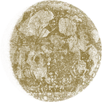
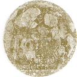
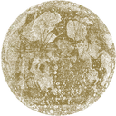
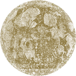
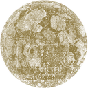
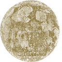
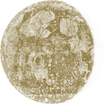
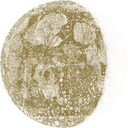
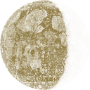
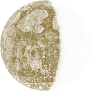
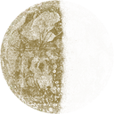
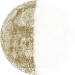
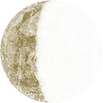
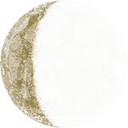
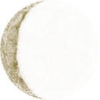
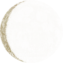
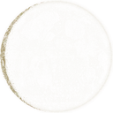
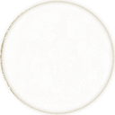
| Riccioli, 1651 | Hevelius, 1647 | |
|---|---|---|
| A | Mare Crisium | Palus Maeotis |
| B | Mare Foecunditatis | Mare Caspium |
| C | Mare Nectaris | Sinus Athen. et Sin. extr. Ponti |
| D | Mare Tranquillitatis | Pontus Euxinus |
| E | Mare Serenitatis | Pontus Euxinus |
| F | Lacus Somniorum | Sinus Cercinites |
| G | Lacus Mortis | Montes Peuce |
| H | Palus Somni | Lacus Corocondametis |
| I | Mare Frigoris | Mare Hyperboreum |
| K | Mare Vaporum | Propontis |
| L | Sinus Aestuum | Mare Adriaticum |
| M | Mare Nubium | Mare Pamphilium |
| N | Mare Humorum | Sinus Sirbonis et Mare Aegyptiacum |
| O | Sinus Epidemiarum | Insulae Didymae |
| P | Oceanus Procellarum | Mare Eoum et Maris Mediterranei pars |
| Q | Mare Imbrium | Maris Mediterranei pars septentrionalis |
| R | Sinus Iridum | Sinus Apollinis |
| S | Sinus Roris | Sinus Hyperboreus |
| Riccioli, 1651 | Hevelius, 1647 | |
|---|---|---|
| 4 | Langrenus | Insula maior |
| 8 | Petavius | Petra Sogdiana |
| 10 | Endymion | Lacus Hyperboreus superior |
| 13 | Atlas | Pars Montium Macrocemniorum |
| 15 | Hercules | Pars Montium Macrocemniorum |
| 20 | Posidonius | Insula Macra |
| 22 | Theophilus | Pars Montis Moschi |
| 27 | Aristoteles | Mons Serrorum |
| 28 | Eudoxus | Mons Carpathes |
| 29 | Menelaus | Byzantium |
| 33 | Manilius | Insula Besbicus |
| 39 | Hipparchus | Mons Olympus |
| 46 | Archimedes | Mons Argentarius |
| 47 | Ptolemaeus | Mons Sipylus |
| 48 | Arzachel | Mons Cragus |
| 49 | Alphonsus | Mons Masicytus |
| 53 | Plato | Lacus Niger maior |
| 54 | Tycho | Mons Sinai |
| 55 | Eratosthenes | Insula Vulcania |
| 59 | Clavius | Desertum Hevila |
| 62 | Landsbergius | Insula Malta |
| 64 | Copernicus | Mons Aetna |
| 66 | Pytheas | Insula Sardinia |
| 68 | Bullialdus | Insula Creta |
| 70 | Reinhold | Mons Neptunus |
| 75 | Kepler | Loca paludosa |
| 76 | Gassendus | Mons Cataractes |
| 78 | Aristarchus | Mons Porphyrites |
| 84 | Pythagoras | ad Sinum Hyperboreum |
| 86 | Grimaldus | Palus Maraeotis |
after Tobias Mayer's Tabula Selenographica, drawn 1748